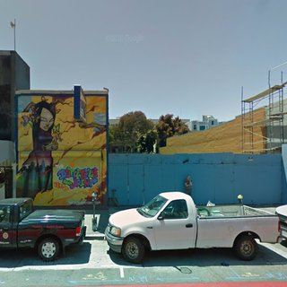

East Bay
San Francisco
Peninsula
South Bay
Elsewhere
News
« Previous
| 1 |
Next »
Legislature May Strengthen California's 'Anti-NIMBY' Law
Aug 25, 2016
Berkeley's Homeless Mayoral Candidate Hits the Airwaves
Aug 24, 2016
Berkeley Faces Federal Lawsuit Over Post Office Sale
Aug 23, 2016
City Controller Says 18 Is the New 25 for SF's Prop C
Aug 23, 2016
Palo Alto Mayor Gives Interview, We Give Up
Aug 23, 2016
New Project With Ample Parking Planned for Uptown Oakland
Aug 22, 2016

Two New Projects Coming to Mission Street
Aug 22, 2016
A Moment of Silence for Governor's By-Right Proposal
Aug 19, 2016
Designs Released for Affordable Housing in Telegraph Hill
Aug 19, 2016
Third Candidate Joins District 9 BART Board Race
Aug 19, 2016
« Previous
| 1 |
Next »